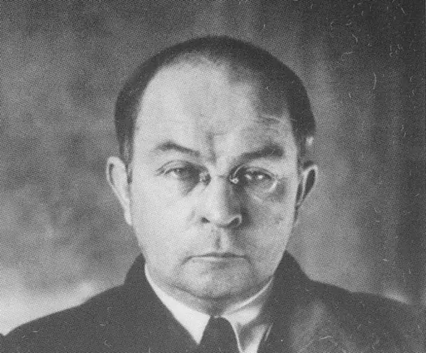
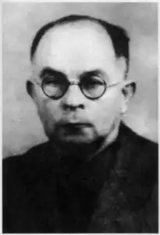
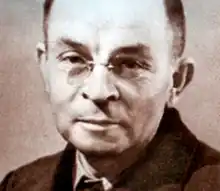
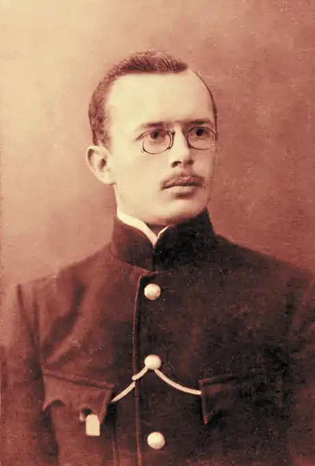
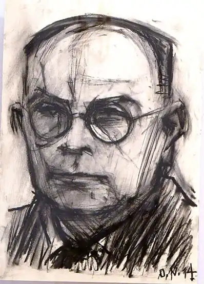

Віктор Платонович Петров, який писав також під псевдонімами Віктор Домонтович та Віктор Бер — український філософ, літературознавець, історик і письменник першої половини XX століття. Разом з Валер'яном Підмогильним — один з основоположників жанру українського інтелектуального роману. З кінця тридцятих років — радянський розвідник.
Народився в сім'ї священика. Дитинство пройшло в Одесі. У 1913 році закінчив Холмську чоловічу гімназію, а в 1918 — історико-філологічний факультет Київського університету. Отримав срібну медаль за свою дипломну роботу "Н. М. Язиков, поет пушкінської плеяди. Життя і творчість". Пізніше працював у Етнографічної комісії Української Академії наук. У 1920-ті роки Петров належав до гуртка неокласиків. Опублікував ряд літературних творів під псевдонімом В. Домонтович. У тридцяті роки отримав ступінь доктора за дослідження "Пантелеймон Куліш у п'ятдесяті роки. Життя. Ідеологія. Творчість". Остання посада перед війною — директор Інституту етнографічних досліджень.
У 1941 році опинився (як пізніше з'ясувалося, невипадково) в окупованому гітлерівцями Харкові. Там він став одним із засновників "Мистецького українського руху". У 1942 і 1943 роках випускав журнал літературний журнал "Український засів", вік якого виявився недовгим — незабаром журнал був переведений з прифронтового Харкова до Кіровограда, де і закінчив своє існування в 1943 році. Віктор Петров-Домонтович, однак, встиг опублікувати в "Українському посіві" свій роман "Без ґрунту", пізніше, вже в еміграції, вийшов його роман "Доктор Серафікус". З 1942 року побував у багатьох містах України — Севастополі, Києві, Кременчуці. У Києві співпрацював з Олегом Ольжичем, який високо цінував літературний та науковий талант Петрова, який був знайомий ще з його батьком О. Олесем. У 1943 р. очолював кафедру етнографії Українського наукового інституту у Львові, в 1944-1945 роках був співробітником Українського наукового інституту в Берліні. Улас Самчук писав, що Петров в Берліні ходив у мундирі німецького офіцера. Пізніше з'ясувалося, що він з 1930-х років був пов'язаний з НКВС і виконував у ворожому тилу розвідувальне завдання, за що у 1965 році Петров був нагороджений орденом Вітчизняної війни I ступеня. Після війни до 1949 р. проживав в Мюнхені, де редагував щомісячний журнал літератури, мистецтва і критики "Арка", в 1947-1949 роках на посаді професора викладав етнографію на філософському факультеті Українського вільного університету в Мюнхені, читав в Богословській академії патрологію (не маючи теологічної освіти). 18 квітня 1949 Петров зник з Мюнхена. У його викраденні звинувачували бандерівців і радянські органи держбезпеки, однак незабаром з'ясувалося, що в СРСР його ім'я не зникло з бібліотек, як це зазвичай траплялося з тими, хто "не повернувся" — більше того, на нього посилався відомий радянський археолог Монгайт. Через деякий час з'явився і сам Петров. До того, як цей факт став відомий емігрантам, на захист Петрова від звинувачень у співпраці з радянською розвідкою виступили багато видних діячів еміграції. Вони вказували на великі заслуги Петрова перед антирадянським рухом — зокрема, на те, що Петров опублікував в емігрантській пресі докладні відомості про більшовицьких репресії проти українських діячів культури. У Москві Петров працював в Інституті археології, а з 1956 року — у Києві в Інституті археології. Втративши документи під час війни, Петров був змушений заново захистити дисертацію в 1966 році. У 1957 р., коли закінчилася його "перевірка", одружився з Софією Федорівною Зеровою, вдовою українського поета і літературознавця Миколи Зерова, розстріляного в 1937 року, з якою був знайомий ще з двадцятих років. Помер в 1969 році за письмовим столом. Похований у Києві. Не встиг закінчити словник пруської мови. У 1988-1989 роках у Нью-Йорку видано тритомне зібрання творів В. Петрова-Домонтовича